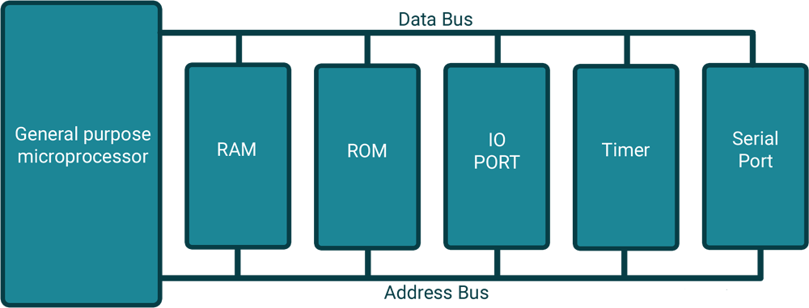
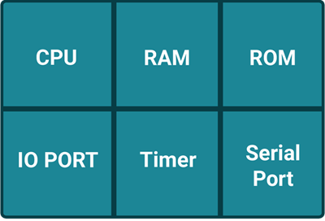

Microcontroller consists of all features that are found in microprocessors with additional built in ROM, RAM, I/O ports, Serial ports, Timers, Interrupts and Clock circuits. It is entire computer on single chip which is embedded within applications. Microcontrollers are widely used in many domestic (washing machine, VCD players, microwave oven, robotics etc.) as well as industrial and automobile areas.
The 8051 is the first microcontroller of the MCS-51 family developed by Intel Corporation in 1980. It was developed using N-type Metal-Oxide-Semiconductor (NMOS) technology and later it came to be identified by a letter C in their names e.g. 80C51 which was developed with Complementary Metal-Oxide-Semiconductor (CMOS) technology which consume less power than NMOS and made it better compatible for battery powered applications.
Microcontrollers can be classified on the basis of their bit processing capability e.g. 8-bit microcontroller means it can read, write and process 8-bit data. Basically it specifies the size of data bus. Today microcontrollers are designed with much more compact, cheap and powerful specifications like AVR and PIC.

General Purpose Microprocessor System
As shown in figure, Microprocessors need external devices such as RAM for data storage, ROM for program storage, PPI 8255 for I/O port, 8253 for timer and USART for serial communication.
All these peripheral are integrated together to form a controlling unit ready to embed within applications.

Microcontroller
Whereas microcontroller has all memories and ports available on chip as shown in figure. This makes microcontrollers most popular. Later many semiconductor companies developed their own microcontrollers with different specifications.
Find below, the specifications for various popular 8051 family members developed by mentioned semiconductor companies.
Developed by | Family members | RAM(bytes) | ROM(Kbytes) | Timers | I/O pins | Serial port | Interrupt sources |
|---|---|---|---|---|---|---|---|
Intel | 8051 | 128 | 4 | 2 | 32 | 1 | 6 |
8052 | 256 | 8 | 3 | 32 | 1 | 8 | |
8031 | 128 | None | 2 | 32 | 1 | 6 | |
Atmel | AT89C51 | 128 | 4 | 2 | 32 | 1 | 6 |
AT89C52 | 256 | 8 | 3 | 32 | 1 | 6 | |
Dallas | DS5000-8 | 128 | 8 | 2 | 32 | 1 | 6 |
DS5000-32 | 128 | 32 | 2 | 32 | 1 | 6 | |
Philips | P89C51RD2 | 1024 | 64 | 3 | 32 | 1 | 8 |

8051 Architecture
All 8051 microcontrollers have unique architecture as shown in figure, which consist of functional blocks to build 8051 powerful controlling machine.
CPU
Microcontroller 8051 has central processing unit which is also called as ALU (Arithmetic Logic Unit) which performs all arithmetic and logical operation.

8051 Pin Diagram
RAM (Random-access memory)
ROM (Read Only Memory)
Sizes specified of RAM and ROM are different by their manufacturer.
Timers and Counters
Interrupts
Oscillator
I/O Ports
Serial Communication port